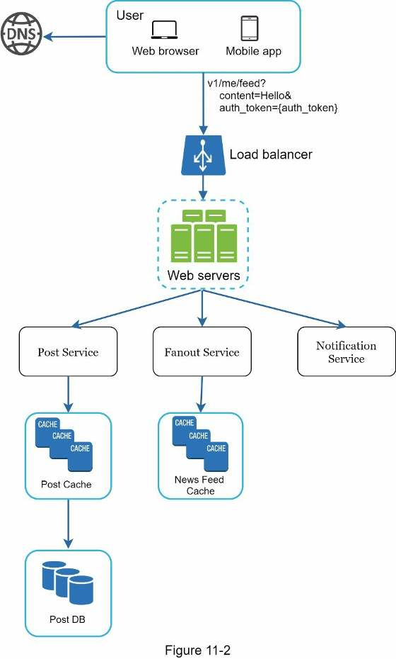
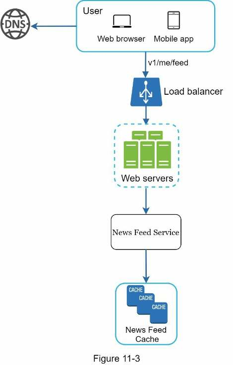
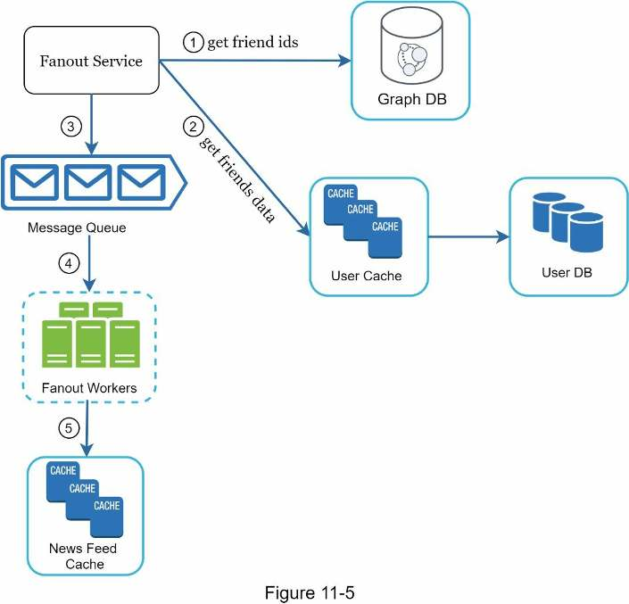
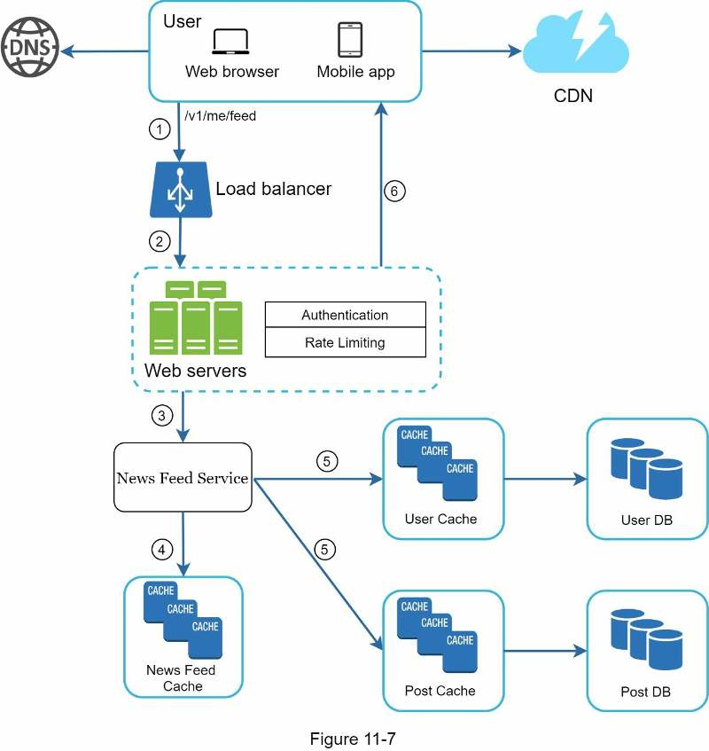

Chapter 11 · Design problem
Design a News Feed System
How a new post reaches up to 5,000 friends' feeds: the publishing and retrieval flows, fanout on write vs fanout on read (and the hybrid that handles celebrities), and the five-layer cache that keeps feeds fast.
TL;DR
- Scope: web + mobile; publish posts and see friends' posts, reverse chronological; up to 5,000 friends; 10M DAU; posts can include images and videos.
- APIs:
POST /v1/me/feed(content,auth_token) publishes;GET /v1/me/feed(auth_token) retrieves. - Publish: web servers (auth + rate limit) → post service (post DB + cache), fanout service (into friends' feed caches), notification service.
- Fanout on write (push): fast reads, but slow for users with many friends (hotkey problem) and wasted on inactive users. Fanout on read (pull): no waste, no hotkey, but slow reads.
- Hybrid: push for most users; for celebrities, followers pull on demand. Consistent hashing spreads hotkeys.
- Fanout steps: friend IDs from a graph DB → filter by settings via user cache → message queue → fanout workers → feed cache stores only
<post_id, user_id>, capped. - Retrieve: post IDs from the feed cache, hydrate from user and post caches, return JSON. Media comes from a CDN.
- Cache layers: news feed, content, social graph, action, counters.

Interview answer skeleton
If asked this in an interview, walk through these four beats. Each maps to a section below.
- Clarify (≈5 min) Web, mobile or both? Key features? Feed order? Max friends (5,000)? Traffic (10M DAU)? Media (images and videos)?
- High-level (≈15 min) Split into feed publishing and news feed building. Define the two APIs. Draw both flows: load balancer, web servers, post/fanout/notification services, news feed service, caches.
- Deep dive (≈15 min) Auth and rate limiting at the web tier. Fanout on write vs read and the hybrid for celebrities. The fanout service's five steps. Retrieval's six steps with hydration and CDN. The five cache layers.
- Wrap up (≈5 min) Scaling the DB (vertical/horizontal, SQL/NoSQL, replication, read replicas, consistency, sharding), stateless web tier, caching, multiple data centers, message queues, key metrics.
Step 1Understand the problem
At minimum, settle which features to support, the feed order, and the scale.
Facebook defines the news feed as the constantly updating list of stories in the middle of your home page: status updates, photos, videos, links, app activity, and likes from people, pages and groups you follow. Similar questions: design the Facebook news feed, Instagram feed, or Twitter timeline.
| You ask | Interviewer says |
|---|---|
| Is this a mobile app, a web app, or both? | Both. |
| What are the important features? | A user can publish a post and see friends' posts on the news feed page. |
| Is the feed sorted in reverse chronological order, or by something like topic scores (e.g. close friends' posts score higher)? | To keep it simple, reverse chronological order. |
| How many friends can a user have? | 5,000. |
| What is the traffic volume? | 10 million DAU (daily active users). |
| Can the feed contain images, videos, or just text? | Media files, including both images and videos. |
Step 2High-level design
Split the system into two flows: feed publishing (write) and news feed building (read).
- Feed publishing: when a user publishes a post, the data is written to cache and database, and the post is populated to friends' news feeds.
- News feed building: the feed is built by aggregating friends' posts in reverse chronological order.
News feed APIs
Clients talk to servers over HTTP-based APIs for posting a status, retrieving the feed, adding friends, etc. The two most important:
| API | Purpose | Params |
|---|---|---|
POST /v1/me/feed | Publish a post | content: the text of the postauth_token: authenticates the request |
GET /v1/me/feed | Retrieve the news feed | auth_token: authenticates the request |
The two flows side by side:


Feed publishing
| Component | Role in publishing (Figure 11-2) |
|---|---|
| User | Views feeds in a browser or mobile app. Posts "Hello" via /v1/me/feed?content=Hello&auth_token={auth_token}. |
| Load balancer | Distributes traffic to web servers. |
| Web servers | Redirect traffic to the internal services. |
| Post service | Persists the post in the database and cache. |
| Fanout service | Pushes new content to friends' news feeds. Feed data is stored in the cache for fast retrieval. |
| Notification service | Tells friends new content is available and sends push notifications. |
News feed building
| Component | Role in building (Figure 11-3) |
|---|---|
| User | Requests their news feed: /v1/me/feed. |
| Load balancer | Redirects traffic to web servers. |
| Web servers | Route requests to the news feed service. |
| News feed service | Fetches the news feed from the cache. |
| News feed cache | Stores the news feed IDs needed to render the feed. |
Step 3Design deep dive
The hard part is fanout: getting one post into thousands of feeds without overloading the system, then hydrating IDs into a full feed on read.
Feed publishing deep dive
Figure 11-4 (in the TL;DR) shows the detailed design. The new parts are in the web servers and the fanout service.
Web servers
Besides talking to clients, web servers enforce:
- Authentication: only users signed in with a valid
auth_tokencan post. - Rate limiting: limit how many posts a user can make in a period. This is vital to prevent spam and abusive content.
Fanout service: push vs pull
Fanout is the process of delivering a post to all friends. There are two models.
| Fanout on write (push) | Fanout on read (pull) | |
|---|---|---|
| How it works | Feed pre-computed at write time: the post goes into friends' caches right after publishing | Feed generated on demand at read time: recent posts are pulled when the user loads the home page |
| Real time | ✓ Generated in real time and pushed to friends immediately | — |
| Fetch speed | ✓ Fast (pre-computed) | ✗ Slow (not pre-computed) |
| Users with many friends | ✗ Fetching the friend list and generating all their feeds is slow: the hotkey problem | ✓ Nothing is pushed, so no hotkey problem |
| Inactive users | ✗ Pre-computing feeds for users who rarely log in wastes resources | ✓ No resources wasted on them |
Alice is a normal user: her posts are pushed into each friend's news feed cache when she posts. Cara is a celebrity: her posts are stored once, and followers pull them when they load their feed. Each feed cache keeps at most 5 IDs.
How the fanout service works

- Fetch friend IDs from the graph database. Graph databases suit managing friend relationships and friend recommendations.
- Get friends' info from the user cache, then filter out friends based on user settings. If you mute someone, their posts don't show in your feed even though you're still friends. A user may also share a post only with specific friends or hide it from others.
- Send the friend list and the new post ID to the message queue.
- Fanout workers fetch from the queue and store the feed data in the news feed cache.
- Store
<post_id, user_id>in the news feed cache. Each new post is appended to the table.
The news feed cache is like a <post_id, user_id> mapping table (Figure 11-6, transcribed):
| post_id | user_id |
|---|---|
| post_id | user_id |
| post_id | user_id |
| … | … (new posts appended; size capped by a configurable limit) |
- Only IDs are stored. Storing whole user and post objects would make memory use very large.
- A configurable limit keeps the cache small. Few users scroll through thousands of posts; most only want the latest content, so the cache miss rate is low.
News feed retrieval deep dive

Media content (images, videos, etc.) is stored in a CDN for fast retrieval. The client retrieves its feed like this:
- The user sends a request for their news feed:
/v1/me/feed. - The load balancer redistributes requests to web servers.
- Web servers call the news feed service.
- The news feed service gets a list of post IDs from the news feed cache.
- A feed is more than IDs: it has the username, profile picture, post content, post image, etc. So the service fetches the complete user and post objects from the user cache and post cache to build the fully hydrated news feed.
- The hydrated feed is returned to the client as JSON for rendering.
Cache architecture
Cache is extremely important for a news feed system. The cache tier has five layers (Figure 11-8, transcribed):
| Layer | Parts | What it stores |
|---|---|---|
| News feed | news feed | IDs of news feeds |
| Content | hot cache · normal | Every post's data. Popular content goes in the hot cache. |
| Social graph | follower · following | User relationship data |
| Action | liked · replied · others | Whether a user liked a post, replied to it, or took other actions on it |
| Counters | like counter · reply counter · other counters | Counts of likes, replies, followers, following, etc. |
Step 4Wrap up
The design has two flows: feed publishing and news feed retrieval. There is no perfect design: every company has unique constraints, so explain the trade-offs of your design and technology choices. With minutes left, talk about scalability.
Scaling the database
The book only lists these points. The one-line reminders come from Chapters 1 and 6.
| Talking point | Reminder |
|---|---|
| Vertical vs horizontal scaling | Scale up (more CPU, RAM on one server) vs scale out (add more servers). |
| SQL vs NoSQL | NoSQL fits when you need super-low latency, data is unstructured or non-relational, you only serialize/deserialize data, or you store massive amounts. |
| Master-slave replication | The master takes all writes; slaves get copies and serve reads. |
| Read replicas | Add replicas to handle a high ratio of reads to writes. |
| Consistency models | Strong (never see stale data), weak, or eventual (replicas converge given time). |
| Database sharding | Split data into shards with the same schema but different data. |
Other talking points
- Keep the web tier stateless.
- Cache data as much as you can.
- Support multiple data centers.
- Loosely couple components with message queues.
- Monitor key metrics, for example QPS during peak hours and latency while users refresh their news feed.
Self-test
What are the requirements for this news feed system?
Web and mobile; publish posts and see friends' posts; reverse chronological order; up to 5,000 friends; 10M DAU; posts can contain images and videos.
What are the two core APIs and their params?
POST /v1/me/feed with content and auth_token to publish; GET /v1/me/feed with auth_token to retrieve.
Which three services do the web servers call when a user publishes a post?
The post service (persists the post to DB and cache), the fanout service (pushes it to friends' news feed caches), and the notification service (tells friends and sends push notifications).
What two things do web servers enforce on publishing, and why?
Authentication (only users with a valid auth_token can post) and rate limiting (caps posts per user per period, to prevent spam and abusive content).
Give the pros and cons of fanout on write.
Pros: real-time, and fetching is fast because feeds are pre-computed. Cons: slow for users with many friends (the hotkey problem), and wasted work for inactive users.
Give the pros and cons of fanout on read.
Pros: no wasted work for inactive users, and no hotkey problem. Con: fetching the feed is slow because it isn't pre-computed.
Which fanout model does the design use, and how does it handle celebrities?
A hybrid: push for most users so feeds load fast; for celebrities or users with many followers, followers pull their posts on demand. Consistent hashing helps spread hotkeys evenly.
Walk through the fanout service's five steps.
1) Get friend IDs from the graph DB. 2) Get friend info from the user cache and filter by settings (muted, selective sharing). 3) Send the friend list and post ID to the message queue. 4) Fanout workers consume from the queue. 5) Store <post_id, user_id> in the news feed cache.
Why does the news feed cache store only IDs, and why is a size limit OK?
Full user and post objects would use too much memory. A configurable limit is fine because most users only read the latest content, so the cache miss rate stays low.
Why can a friend's post be missing from your feed even though you're friends?
The fanout service filters by settings: you may have muted them, or they may have shared the post only with specific friends or hidden it from you.
What does "hydrating" the feed mean on retrieval?
The news feed service turns the list of post IDs from the feed cache into full objects (username, profile picture, content, images) by fetching from the user cache and post cache, then returns JSON.
Where are images and videos served from?
A CDN, for fast retrieval.
Name the five cache layers.
News feed (feed IDs), content (post data, with a hot cache for popular posts), social graph (follower/following), action (liked, replied, others), counters (likes, replies, followers, following).
Which metrics does the book suggest monitoring?
QPS during peak hours and latency while users refresh their news feed.
Terms to know
- News feed
- The constantly updating list of stories from people, pages and groups you follow.
- Fanout
- Delivering a post to all of the poster's friends.
- Fanout on write (push)
- Pre-compute feeds at post time by writing the post into each friend's feed cache.
- Fanout on read (pull)
- Build the feed on demand when the user loads it.
- Hotkey problem
- One key (e.g. a user with huge numbers of friends) creating disproportionate load.
- Consistent hashing
- A hashing scheme that spreads requests and data evenly across servers (Chapter 5).
- Graph database
- A database built for relationships; used for friend lists and recommendations.
- Hydration
- Turning feed IDs into full user and post objects before returning the feed.
- Hot cache
- The part of the content cache that holds popular posts.
- CDN
- Content delivery network: serves images and videos from servers close to the user.